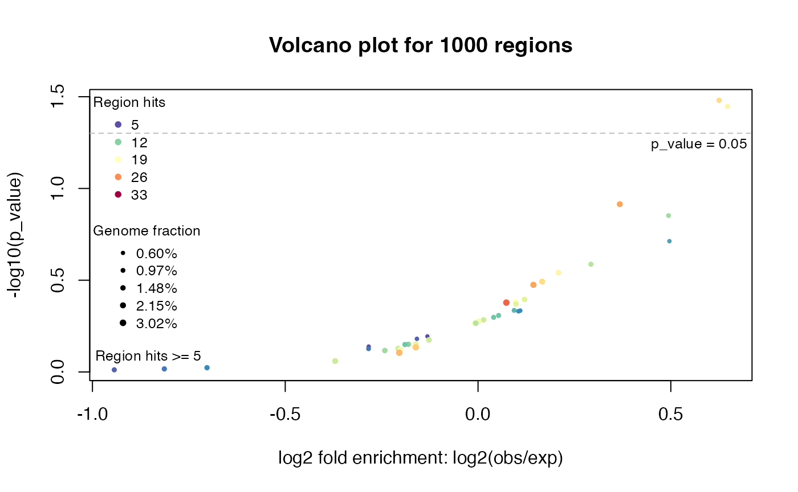
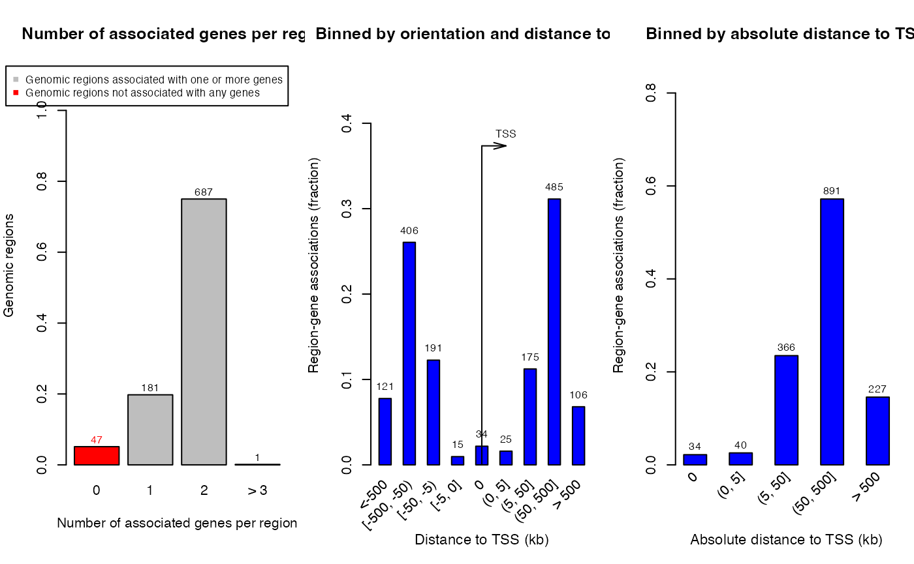

Topic 3-02: Local GREAT analysis
Zuguang Gu z.gu@dkfz.de
2024-01-26
Source:vignettes/topic3_02_local_GREAT.Rmd
topic3_02_local_GREAT.RmdBasic usage
First let’s load the rGREAT package and generate a set of random regions:
## Loading required package: GenomicRanges## Loading required package: stats4## Loading required package: BiocGenerics##
## Attaching package: 'BiocGenerics'## The following objects are masked from 'package:stats':
##
## IQR, mad, sd, var, xtabs## The following objects are masked from 'package:base':
##
## Filter, Find, Map, Position, Reduce, anyDuplicated, aperm, append,
## as.data.frame, basename, cbind, colnames, dirname, do.call,
## duplicated, eval, evalq, get, grep, grepl, intersect, is.unsorted,
## lapply, mapply, match, mget, order, paste, pmax, pmax.int, pmin,
## pmin.int, rank, rbind, rownames, sapply, setdiff, sort, table,
## tapply, union, unique, unsplit, which.max, which.min## Loading required package: S4Vectors## Warning: package 'S4Vectors' was built under R version 4.3.2##
## Attaching package: 'S4Vectors'## The following object is masked from 'package:utils':
##
## findMatches## The following objects are masked from 'package:base':
##
## I, expand.grid, unname## Loading required package: IRanges## Loading required package: GenomeInfoDb## ## ## ========================================
## rGREAT version 2.5.1
## Bioconductor page: http://bioconductor.org/packages/rGREAT/
## Github page: https://github.com/jokergoo/rGREAT
##
## If you use it in published research, please cite:
## Gu, Z. rGREAT: an R/Bioconductor package for functional enrichment
## on genomic regions. Bioinformatics 2023.
##
## This message can be suppressed by:
## suppressPackageStartupMessages(library(rGREAT))
##
## Note: On Aug 19 2019 GREAT released version 4 where it supports `hg38`
## genome and removes some ontologies such pathways. `submitGreatJob()`
## still takes `hg19` as default. `hg38` can be specified by the `species
## = 'hg38'` argument. To use the older versions such as 3.0.0, specify as
## `submitGreatJob(..., version = '3.0.0')`.
##
## From rGREAT version 1.99.0, it also implements the GREAT algorithm and
## it allows to integrate GREAT analysis with the Bioconductor annotation
## ecosystem. By default it supports more than 500 organisms. Check the
## new function `great()` and the new vignette.
## ========================================
set.seed(123)
gr = randomRegions(nr = 1000, genome = "hg19")GREAT analysis needs two types of input data: the gene sets and TSS source. Thus the second argument in great() corresponds to the gene sets, and the third argumetn corresponds to the source of TSS.
rGREAT has integrated many gene sets and genomes.
res = great(gr, "MSigDB:H", "hg19")Following functions are very similar as in online GREAT.
tb = getEnrichmentTable(res)
plotVolcano(res)

## GRanges object with 869 ranges and 2 metadata columns:
## seqnames ranges strand | annotated_genes dist_to_TSS
## <Rle> <IRanges> <Rle> | <CharacterList> <IntegerList>
## [1] chr1 9204434-9208784 * | GPR157,H6PD -15205,-86079
## [2] chr1 9853594-9859363 * | PIK3CD,CLSTN1 141804,25187
## [3] chr1 10862809-10871681 * | CASZ1,C1orf127 -6076,170413
## [4] chr1 12716970-12723206 * | AADACL4,AADACL3 12404,-52912
## [5] chr1 13814692-13823250 * | PRAMEF17,LRRC38 98604,16992
## ... ... ... ... . ... ...
## [865] chrY 16384799-16389852 * | TMSB4Y,NLGN4Y 569352,-244636
## [866] chrY 16842593-16846893 * | NLGN4Y 208105
## [867] chrY 16998750-17003225 * | NLGN4Y 364262
## [868] chrY 24401612-24406252 * | RBMY1E,RBMY1F -72523,-48754
## [869] chrY 26206997-26215445 * | DAZ2 841416
## -------
## seqinfo: 26 sequences from an unspecified genome; no seqlengths
plotRegionGeneAssociations(res, term_id = "HALLMARK_APOPTOSIS")
# shinyReport(res)The following gene sets are directly supported:
-
"GO:BP": Biological Process. -
"GO:CC": Cellular Component. -
"GO:MP": Molecular Function.
Note MSigDB genes are only for human.
-
"msigdb:H"Hallmark gene sets. -
"msigdb:C1"Positional gene sets. -
"msigdb:C2"Curated gene sets. -
"msigdb:C2:CGP"C2 subcategory: chemical and genetic perturbations gene sets. -
"msigdb:C2:CP"C2 subcategory: canonical pathways gene sets. -
"msigdb:C2:CP:KEGG"C2 subcategory: KEGG subset of CP. -
"msigdb:C2:CP:PID"C2 subcategory: PID subset of CP. -
"msigdb:C2:CP:REACTOME"C2 subcategory: REACTOME subset of CP. -
"msigdb:C2:CP:WIKIPATHWAYS"C2 subcategory: WIKIPATHWAYS subset of CP. -
"msigdb:C3"Regulatory target gene sets. -
"msigdb:C3:MIR:MIRDB"miRDB of microRNA targets gene sets. -
"msigdb:C3:MIR:MIR_LEGACY"MIR_Legacy of MIRDB. -
"msigdb:C3:TFT:GTRD"GTRD transcription factor targets gene sets. -
"msigdb:C3:TFT:TFT_LEGACY"TFT_Legacy. -
"msigdb:C4"Computational gene sets. -
"msigdb:C4:CGN"C4 subcategory: cancer gene neighborhoods gene sets. -
"msigdb:C4:CM"C4 subcategory: cancer modules gene sets. -
"msigdb:C5"Ontology gene sets. -
"msigdb:C5:GO:BP"C5 subcategory: BP subset. -
"msigdb:C5:GO:CC"C5 subcategory: CC subset. -
"msigdb:C5:GO:MF"C5 subcategory: MF subset. -
"msigdb:C5:HPO"C5 subcategory: human phenotype ontology gene sets. -
"msigdb:C6"Oncogenic signature gene sets. -
"msigdb:C7"Immunologic signature gene sets. -
"msigdb:C7:IMMUNESIGDB"ImmuneSigDB subset of C7. -
"msigdb:C7:VAX"C7 subcategory: vaccine response gene sets. -
"msigdb:C8"Cell type signature gene sets.
The "GO:" and “msigdb:” prefix can be removed when specifying in great().
Setting genome background
Background can be set via backgroud and excluce arguments.
gap = getGapFromUCSC("hg19", paste0("chr", c(1:22, "X", "Y")))
great(gr, "MSigDB:H", "hg19", exclude = gap)
great(gr, "GO:BP", "hg19", background = paste0("chr", 1:22))
great(gr, "GO:BP", "hg19", exclude = c("chrX", "chrY"))Restricting the anallysis in a certain type of genome background helps to reduce the false positives. Examples are:
- excluding unmappable regions
- regions with certain level of CG density
- regions with certain level of gene densities
- exons (coding regions)
Extend from the complete gene
This feature is only available in the devel version of rGREAT.
great(gr, "BP", "hg19", extend_from = "gene")Using other gene sets
More gene sets can be set as a list of gene vectors. For most organisms, EntreZ IDs should be used as the gene ID type in gene sets.
From a .gmt file:
gs = read_gmt(url("http://dsigdb.tanlab.org/Downloads/D2_LINCS.gmt"),
from = "SYMBOL", to = "ENTREZ", orgdb = "org.Hs.eg.db")
gs[1:2]## $GSK429286A
## [1] "5566" "9475" "81788" "6093" "5562" "26524" "5592" "5979" "640"
## [10] "5567" "3717" "5613" "23012" "695" "3718"
##
## $`BS-181`
## [1] "122011" "1452" "1022" "7272" "1454" "1453" "65975" "147746"
## [9] "1859" "1195" "1196" "9149" "57396" "5261"
great(gr, gs, "hg19")## 916 regions are associated to 1400 genes' extended TSSs.
## TSS source: TxDb.Hsapiens.UCSC.hg19.knownGene
## Genome: hg19
## OrgDb: org.Hs.eg.db
## Gene sets: self-provided
## Background: whole genome excluding gaps
## Mode: Basal plus extension
## Proximal: 5000 bp upstream, 1000 bp downstream,
## plus Distal: up to 1000000 bpKEGG pathways:
df = read.table(url("https://rest.kegg.jp/link/pathway/hsa"), sep = "\t")
df[, 1] = gsub("hsa:", "", df[, 1])
df[, 2] = gsub("path:", "", df[, 2])
gs_kegg = split(df[, 1], df[, 2])
gs_kegg[1:2]## $hsa00010
## [1] "10327" "124" "125" "126" "127" "128" "130" "130589"
## [9] "131" "160287" "1737" "1738" "2023" "2026" "2027" "217"
## [17] "218" "219" "2203" "221" "222" "223" "224" "226"
## [25] "229" "230" "2538" "2597" "26330" "2645" "2821" "3098"
## [33] "3099" "3101" "387712" "3939" "3945" "3948" "441531" "501"
## [41] "5105" "5106" "5160" "5161" "5162" "5211" "5213" "5214"
## [49] "5223" "5224" "5230" "5232" "5236" "5313" "5315" "55276"
## [57] "55902" "57818" "669" "7167" "80201" "83440" "84532" "8789"
## [65] "92483" "92579" "9562"
##
## $hsa00020
## [1] "1431" "1737" "1738" "1743" "2271" "3417" "3418" "3419" "3420"
## [10] "3421" "4190" "4191" "47" "48" "4967" "50" "5091" "5105"
## [19] "5106" "5160" "5161" "5162" "55753" "6389" "6390" "6391" "6392"
## [28] "8801" "8802" "8803"
great(gr, gs_kegg, "hg19")## 916 regions are associated to 1400 genes' extended TSSs.
## TSS source: TxDb.Hsapiens.UCSC.hg19.knownGene
## Genome: hg19
## OrgDb: org.Hs.eg.db
## Gene sets: self-provided
## Background: whole genome excluding gaps
## Mode: Basal plus extension
## Proximal: 5000 bp upstream, 1000 bp downstream,
## plus Distal: up to 1000000 bpReactome pathways:
library(reactome.db)## Loading required package: AnnotationDbi## Loading required package: Biobase## Welcome to Bioconductor
##
## Vignettes contain introductory material; view with
## 'browseVignettes()'. To cite Bioconductor, see
## 'citation("Biobase")', and for packages 'citation("pkgname")'.## 916 regions are associated to 1400 genes' extended TSSs.
## TSS source: TxDb.Hsapiens.UCSC.hg19.knownGene
## Genome: hg19
## OrgDb: org.Hs.eg.db
## Gene sets: self-provided
## Background: whole genome excluding gaps
## Mode: Basal plus extension
## Proximal: 5000 bp upstream, 1000 bp downstream,
## plus Distal: up to 1000000 bpOther organisms who have txdb packages
On Bioconductor, there are a family of annotation packages with name txdb.*.db. These packages contain sources of TSS definitions.
All supported txdb.*.db packages:
tb = rGREAT:::BIOC_ANNO_PKGS
knitr::kable(tb[!duplicated(tb$genome_version_in_txdb), ])| species_name | species_latin | taxon_id | txdb | gene_id_in_txdb | genome_version_in_txdb | orgdb | primary_gene_id_in_orgdb | chromosome_prefix | |
|---|---|---|---|---|---|---|---|---|---|
| 1 | human | Homo sapiens | 9606 | TxDb.Hsapiens.UCSC.hg18.knownGene | Entrez Gene ID | hg18 | org.Hs.eg.db | Entrez Gene ID | chr |
| 2 | human | Homo sapiens | 9606 | TxDb.Hsapiens.UCSC.hg19.knownGene | Entrez Gene ID | hg19 | org.Hs.eg.db | Entrez Gene ID | chr |
| 3 | human | Homo sapiens | 9606 | TxDb.Hsapiens.UCSC.hg38.knownGene | Entrez Gene ID | hg38 | org.Hs.eg.db | Entrez Gene ID | chr |
| 5 | mouse | Mus musculus | 10090 | TxDb.Mmusculus.UCSC.mm10.knownGene | Entrez Gene ID | mm10 | org.Mm.eg.db | Entrez Gene ID | chr |
| 7 | mouse | Mus musculus | 10090 | TxDb.Mmusculus.UCSC.mm39.refGene | Entrez Gene ID | mm39 | org.Mm.eg.db | Entrez Gene ID | chr |
| 8 | mouse | Mus musculus | 10090 | TxDb.Mmusculus.UCSC.mm9.knownGene | Entrez Gene ID | mm9 | org.Mm.eg.db | Entrez Gene ID | chr |
| 9 | rat | Rattus norvegicus | 10116 | TxDb.Rnorvegicus.UCSC.rn4.ensGene | Ensembl gene ID | rn4 | org.Rn.eg.db | Entrez Gene ID | chr |
| 10 | rat | Rattus norvegicus | 10116 | TxDb.Rnorvegicus.UCSC.rn5.refGene | Entrez Gene ID | rn5 | org.Rn.eg.db | Entrez Gene ID | chr |
| 11 | rat | Rattus norvegicus | 10116 | TxDb.Rnorvegicus.UCSC.rn6.refGene | Entrez Gene ID | rn6 | org.Rn.eg.db | Entrez Gene ID | chr |
| 12 | rat | Rattus norvegicus | 10116 | TxDb.Rnorvegicus.UCSC.rn7.refGene | Entrez Gene ID | rn7 | org.Rn.eg.db | Entrez Gene ID | chr |
| 13 | chicken | Gallus gallus | 9031 | TxDb.Ggallus.UCSC.galGal4.refGene | Entrez Gene ID | galGal4 | org.Gg.eg.db | Entrez Gene ID | chr |
| 14 | chicken | Gallus gallus | 9031 | TxDb.Ggallus.UCSC.galGal5.refGene | Entrez Gene ID | galGal5 | org.Gg.eg.db | Entrez Gene ID | chr |
| 15 | chicken | Gallus gallus | 9031 | TxDb.Ggallus.UCSC.galGal6.refGene | Entrez Gene ID | galGal6 | org.Gg.eg.db | Entrez Gene ID | chr |
| 16 | rhesus | Macaca mulatta | 9544 | TxDb.Mmulatta.UCSC.rheMac10.refGene | Entrez Gene ID | rheMac10 | org.Mmu.eg.db | Entrez Gene ID | chr |
| 17 | rhesus | Macaca mulatta | 9544 | TxDb.Mmulatta.UCSC.rheMac3.refGene | Entrez Gene ID | rheMac3 | org.Mmu.eg.db | Entrez Gene ID | chr |
| 18 | rhesus | Macaca mulatta | 9544 | TxDb.Mmulatta.UCSC.rheMac8.refGene | Entrez Gene ID | rheMac8 | org.Mmu.eg.db | Entrez Gene ID | chr |
| 19 | worm | Caenorhabditis elegans | 6239 | TxDb.Celegans.UCSC.ce11.refGene | Entrez Gene ID | ce11 | org.Ce.eg.db | Entrez Gene ID | chr |
| 21 | dog | Canis familiari | 9615 | TxDb.Cfamiliaris.UCSC.canFam3.refGene | Entrez Gene ID | canFam3 | org.Cf.eg.db | Entrez Gene ID | chr |
| 22 | dog | Canis familiari | 9615 | TxDb.Cfamiliaris.UCSC.canFam4.refGene | Entrez Gene ID | canFam4 | org.Cf.eg.db | Entrez Gene ID | chr |
| 23 | dog | Canis familiari | 9615 | TxDb.Cfamiliaris.UCSC.canFam5.refGene | Entrez Gene ID | canFam5 | org.Cf.eg.db | Entrez Gene ID | chr |
| 24 | pig | Sus scrofa | 9823 | TxDb.Sscrofa.UCSC.susScr11.refGene | Entrez Gene ID | susScr11 | org.Ss.eg.db | Entrez Gene ID | chr |
| 25 | pig | Sus scrofa | 9823 | TxDb.Sscrofa.UCSC.susScr3.refGene | Entrez Gene ID | susScr3 | org.Ss.eg.db | Entrez Gene ID | chr |
| 26 | yeast | Saccharomyces cerevisiae | 4932 | TxDb.Scerevisiae.UCSC.sacCer2.sgdGene | SGD Gene ID | sacCer2 | org.Sc.sgd.db | SGD Gene ID | chr |
| 27 | yeast | Saccharomyces cerevisiae | 4932 | TxDb.Scerevisiae.UCSC.sacCer3.sgdGene | SGD Gene ID | sacCer3 | org.Sc.sgd.db | SGD Gene ID | chr |
| 28 | chimp | Pan troglodytes | 9598 | TxDb.Ptroglodytes.UCSC.panTro4.refGene | Entrez Gene ID | panTro4 | org.Pt.eg.db | Entrez Gene ID | chr |
| 29 | chimp | Pan troglodytes | 9598 | TxDb.Ptroglodytes.UCSC.panTro5.refGene | Entrez Gene ID | panTro5 | org.Pt.eg.db | Entrez Gene ID | chr |
| 30 | chimp | Pan troglodytes | 9598 | TxDb.Ptroglodytes.UCSC.panTro6.refGene | Entrez Gene ID | panTro6 | org.Pt.eg.db | Entrez Gene ID | chr |
| 31 | fruitfly | Drosophila melanogaster | 7227 | TxDb.Dmelanogaster.UCSC.dm3.ensGene | Ensembl gene ID | dm3 | org.Dm.eg.db | Entrez Gene ID | chr |
| 32 | fruitfly | Drosophila melanogaster | 7227 | TxDb.Dmelanogaster.UCSC.dm6.ensGene | Ensembl gene ID | dm6 | org.Dm.eg.db | Entrez Gene ID | chr |
| 33 | zebrafish | Danio rerio | 7955 | TxDb.Drerio.UCSC.danRer10.refGene | Entrez Gene ID | danRer10 | org.Dr.eg.db | Entrez Gene ID | chr |
| 34 | zebrafish | Danio rerio | 7955 | TxDb.Drerio.UCSC.danRer11.refGene | Entrez Gene ID | danRer11 | org.Dr.eg.db | Entrez Gene ID | chr |
| 35 | cattle | Bos taurus | 9913 | TxDb.Btaurus.UCSC.bosTau8.refGene | Entrez Gene ID | bosTau8 | org.Bt.eg.db | Entrez Gene ID | chr |
| 36 | cattle | Bos taurus | 9913 | TxDb.Btaurus.UCSC.bosTau9.refGene | Entrez Gene ID | bosTau9 | org.Bt.eg.db | Entrez Gene ID | chr |
| 37 | thale cress | Arabidopsis thaliana | 3702 | TxDb.Athaliana.BioMart.plantsmart51 | TAIR ID | araTha | org.At.tair.db | TAIR ID |
For these packages, users only need to specify the “genome version”:
Use MSigDB gene sets
The msigdbr package provides gene sets by mapping to several other organisms.
## # A tibble: 20 × 2
## species_name species_common_name
## <chr> <chr>
## 1 Anolis carolinensis Carolina anole, green anole
## 2 Bos taurus bovine, cattle, cow, dairy cow, domestic cat…
## 3 Caenorhabditis elegans NA
## 4 Canis lupus familiaris dog, dogs
## 5 Danio rerio leopard danio, zebra danio, zebra fish, zebr…
## 6 Drosophila melanogaster fruit fly
## 7 Equus caballus domestic horse, equine, horse
## 8 Felis catus cat, cats, domestic cat
## 9 Gallus gallus bantam, chicken, chickens, Gallus domesticus
## 10 Homo sapiens human
## 11 Macaca mulatta rhesus macaque, rhesus macaques, Rhesus monk…
## 12 Monodelphis domestica gray short-tailed opossum
## 13 Mus musculus house mouse, mouse
## 14 Ornithorhynchus anatinus duck-billed platypus, duckbill platypus, pla…
## 15 Pan troglodytes chimpanzee
## 16 Rattus norvegicus brown rat, Norway rat, rat, rats
## 17 Saccharomyces cerevisiae baker's yeast, brewer's yeast, S. cerevisiae
## 18 Schizosaccharomyces pombe 972h- NA
## 19 Sus scrofa pig, pigs, swine, wild boar
## 20 Xenopus tropicalis tropical clawed frog, western clawed frog## # A tibble: 6 × 18
## gs_cat gs_subcat gs_name gene_symbol entrez_gene ensembl_gene
## <chr> <chr> <chr> <chr> <int> <chr>
## 1 H "" HALLMARK_ADIPOGENESIS ABCA1 464630 ENSPTRG0000002…
## 2 H "" HALLMARK_ADIPOGENESIS ABCB8 463892 ENSPTRG0000001…
## 3 H "" HALLMARK_ADIPOGENESIS ACAA2 455414 ENSPTRG0000001…
## 4 H "" HALLMARK_ADIPOGENESIS ACADL 459914 ENSPTRG0000001…
## 5 H "" HALLMARK_ADIPOGENESIS ACADM 469356 ENSPTRG0000000…
## 6 H "" HALLMARK_ADIPOGENESIS ACADS 742921 ENSPTRG0000000…
## # ℹ 12 more variables: human_gene_symbol <chr>, human_entrez_gene <int>,
## # human_ensembl_gene <chr>, gs_id <chr>, gs_pmid <chr>, gs_geoid <chr>,
## # gs_exact_source <chr>, gs_url <chr>, gs_description <chr>, taxon_id <int>,
## # ortholog_sources <chr>, num_ortholog_sources <dbl>Convert from the original format to a list of gene vectors.
h_gene_sets = split(h_gene_sets$entrez_gene, h_gene_sets$gs_name)
h_gene_sets = lapply(h_gene_sets, as.character) # just to make sure gene IDs are all in character.
h_gene_sets = lapply(h_gene_sets, function(x) unique(x[!is.na(x)])) # remove NA and duplicated genes
h_gene_sets[1:2]## $HALLMARK_ADIPOGENESIS
## [1] "464630" "463892" "455414" "459914" "469356" "742921"
## [7] "454672" "104003784" "454895" "451866" "737339" "471032"
## [13] "451742" "737305" "100615914" "456723" "107967644" "454362"
## [19] "464334" "743667" "741867" "449586" "100614256" "741708"
## [25] "459164" "746692" "473976" "452433" "468889" "745443"
## [31] "460926" "455644" "451116" "454684" "744890" "461229"
## [37] "740513" "104005232" "463949" "469319" "748673" "450673"
## [43] "468605" "471455" "456837" "464611" "452659" "472079"
## [49] "452307" "454118" "100616508" "465727" "742828" "737945"
## [55] "107976794" "746229" "472893" "456557" "457056" "747265"
## [61] "736777" "464460" "451393" "745691" "454512" "466780"
## [67] "463861" "744984" "452566" "457117" "747936" "459360"
## [73] "461436" "464353" "464074" "466651" "451984" "456243"
## [79] "464255" "467738" "466732" "461244" "456929" "460520"
## [85] "450562" "450738" "464140" "459670" "452976" "471703"
## [91] "741876" "471135" "461424" "459828" "452295" "460113"
## [97] "453565" "741179" "747276" "470423" "451967" "450290"
## [103] "473975" "460157" "462946" "449638" "738797" "456076"
## [109] "451807" "464031" "739986" "459173" "460872" "463484"
## [115] "462853" "739167" "457477" "742027" "746245" "472764"
## [121] "747387" "744096" "101057233" "744811" "463686" "744435"
## [127] "468748" "451175" "460227" "454744" "739996" "450735"
## [133] "454478" "457929" "738397" "458602" "456908" "451591"
## [139] "450310" "107970333" "465012" "463481" "460178" "470365"
## [145] "742092" "741184" "459094" "459374" "456940" "745779"
## [151] "454531" "737918" "107973114" "742100" "470420" "468499"
## [157] "467657" "100608935" "462416" "451281" "470281" "452359"
## [163] "456862" "456526" "747462" "474051" "456155" "458647"
## [169] "744390" "455841" "459096" "459031" "450574" "449637"
## [175] "450628" "470477" "471247" "453405" "739128" "454681"
## [181] "464707" "470417" "450933" "459685" "460443" "468406"
## [187] "458803" "467151" "464550" "745004" "451416" "735808"
## [193] "743144" "460348" "107974864" "471631" "741897" "463489"
##
## $HALLMARK_ALLOGRAFT_REJECTION
## [1] "454210" "461523" "450363" "100609296" "459646" "740898"
## [7] "466415" "450170" "465345" "456984" "744209" "449497"
## [13] "100608992" "459361" "741390" "468208" "748142" "473220"
## [19] "748205" "736543" "454593" "747004" "454579" "747123"
## [25] "462689" "460323" "740071" "450128" "469524" "449512"
## [31] "748272" "470617" "451584" "742330" "451585" "450124"
## [37] "100615583" "473802" "460569" "745293" "462191" "740560"
## [43] "470892" "470900" "735755" "470426" "460577" "465021"
## [49] "465607" "736196" "457127" "453745" "457277" "738275"
## [55] "471200" "459634" "457770" "469142" "463415" "466216"
## [61] "458797" "453714" "469204" "750603" "100615835" "740028"
## [67] "451695" "451158" "471510" "738331" "469584" "739516"
## [73] "465940" "461906" "468521" "457003" "472959" "457020"
## [79] "467610" "461873" "452825" "460623" "463280" "746195"
## [85] "750725" "100608816" "449592" "471979" "471977" "471974"
## [91] "462591" "462540" "494187" "450196" "474132" "473965"
## [97] "449517" "747276" "470077" "743102" "472749" "469657"
## [103] "736204" "460816" "471723" "455851" "449564" "737808"
## [109] "449644" "739011" "744277" "450200" "461472" "456370"
## [115] "450884" "470203" "101059843" "449565" "454005" "463288"
## [121] "464245" "745517" "463371" "470524" "462386" "450927"
## [127] "454294" "454045" "458607" "735556" "464979" "450156"
## [133] "738375" "456715" "471734" "736309" "744486" "459682"
## [139] "745667" "472771" "462888" "748652" "449582" "458294"
## [145] "460699" "459239" "741196" "460720" "100322885" "469743"
## [151] "455026" "740704" "740477" "450512" "453993" "456276"
## [157] "743176" "748032" "457607" "462249" "464277" "737451"
## [163] "746600" "737526" "456065" "461536" "107966305" "746721"
## [169] "737070" "459209" "451169" "450503" "461971" "461023"
## [175] "459834" "100610925" "471978" "746399" "746814" "456060"
## [181] "457742" "451611" "107971092" "461167" "471325" "471374"
## [187] "471167" "494186" "748737" "464876" "741922" "745141"
## [193] "452125" "453161" "743187" "459427"Remember to pick the correct genome version.
great(gr, h_gene_sets, "panTro6")Other organisms who have txdb object on AnnotationHub
For some other organisms, although they don’t have a txdb package on Bioconductor, but they have a txdb object on AnnotationHub:
library(AnnotationHub)## Loading required package: BiocFileCache## Loading required package: dbplyr##
## Attaching package: 'AnnotationHub'## The following object is masked from 'package:Biobase':
##
## cache
ah = AnnotationHub()
query(ah, "TxDb")## AnnotationHub with 502 records
## # snapshotDate(): 2023-04-25
## # $dataprovider: UCSC, FungiDB, TriTrypDB, PlasmoDB, MicrosporidiaDB, ToxoDB...
## # $species: Homo sapiens, Rattus norvegicus, Macaca mulatta, Gallus gallus, ...
## # $rdataclass: TxDb, SQLiteFile, FaFile, ChainFile
## # additional mcols(): taxonomyid, genome, description,
## # coordinate_1_based, maintainer, rdatadateadded, preparerclass, tags,
## # rdatapath, sourceurl, sourcetype
## # retrieve records with, e.g., 'object[["AH52245"]]'
##
## title
## AH52245 | TxDb.Athaliana.BioMart.plantsmart22.sqlite
## AH52246 | TxDb.Athaliana.BioMart.plantsmart25.sqlite
## AH52247 | TxDb.Athaliana.BioMart.plantsmart28.sqlite
## AH52248 | TxDb.Btaurus.UCSC.bosTau8.refGene.sqlite
## AH52249 | TxDb.Celegans.UCSC.ce11.refGene.sqlite
## ... ...
## AH100420 | TxDb.Rnorvegicus.UCSC.rn7.refGene.sqlite
## AH107068 | TxDb.Hsapiens.UCSC.hg38.knownGene.sqlite
## AH111584 | TxDb.Cfamiliaris.UCSC.canFam6.refGene.sqlite
## AH111585 | TxDb.Hsapiens.UCSC.hg38.knownGene.sqlite
## AH111586 | TxDb.Mmusculus.UCSC.mm39.knownGene.sqliteBut it seems many of those organisms are microbes. I will not introduce it here.
Other organisms who do not have txdb objects
Then we need to obtain the TSS definition manually. Obtaining gene sets for an organism is relatively easy, but it is sometimes difficult to find a proper genome version because for these “rare” genomes, their genome data evolves very fast.
There are mainly two sources to obtain TSS definitions: 1. from NCBI, 2. from Ensembl.
Get TSS from NCBI
We need to first know the “accession number” of an organism’s genome. Taking dolphin as an example, its web page on NCBI Genome is https://www.ncbi.nlm.nih.gov/datasets/genome/GCF_011762595.1/. In rGREAT, there is a getGenomeDataFromNCBI() function which can automatically retrieve gene definitions from NCBI.
genes = getGenomeDataFromNCBI("GCF_011762595.1", return_granges = TRUE)
genes## GRanges object with 19081 ranges and 1 metadata column:
## seqnames ranges strand | gene_id
## <Rle> <IRanges> <Rle> | <character>
## [1] 1 234018-239154 + | 101335869
## [2] 1 241768-255021 + | 101336161
## [3] 1 259970-287776 + | 101336448
## [4] 1 288745-298452 + | 101336738
## [5] 1 325391-327082 - | 101321052
## ... ... ... ... . ...
## [19077] MT 9921-10217 + | 7412053
## [19078] MT 10211-11588 + | 7412054
## [19079] MT 11790-13610 + | 7412055
## [19080] MT 13594-14121 - | 7412056
## [19081] MT 14195-15334 + | 7412057
## -------
## seqinfo: 23 sequences from an unspecified genomeAs we have already introduced, retrieve GO gene sets for an organism is easy:
library(AnnotationHub)
ah = AnnotationHub()
orgdb = ah[["AH112418"]]## loading from cache
library(GSEAtraining)
gs = get_GO_gene_sets_from_orgdb(orgdb, "BP")## 'select()' returned 1:many mapping between keys and columns
gs[1:2]## $`GO:0000002`
## [1] "101319146" "101322275" "101323809" "101330306" "101331231"
##
## $`GO:0000003`
## [1] "101315473" "101315779" "101315844" "101316274" "101317140" "101317576"
## [7] "101318187" "101318517" "101319190" "101319299" "101319304" "101319388"
## [13] "101320716" "101320750" "101321450" "101321508" "101322077" "101322345"
## [19] "101322448" "101322514" "101322704" "101323047" "101323261" "101323943"
## [25] "101324056" "101324122" "101324339" "101324447" "101324449" "101324490"
## [31] "101324905" "101325108" "101325913" "101325919" "101326152" "101326231"
## [37] "101326437" "101326933" "101327444" "101327862" "101327873" "101328010"
## [43] "101328226" "101328268" "101329362" "101329580" "101330462" "101330610"
## [49] "101330719" "101330811" "101330824" "101331374" "101332287" "101332538"
## [55] "101332651" "101333019" "101333102" "101333142" "101333516" "101333673"
## [61] "101333789" "101334121" "101334234" "101334244" "101334581" "101334796"
## [67] "101335504" "101335685" "101335701" "101335760" "101336111" "101336262"
## [73] "101336493" "101336945" "101337286" "101337313" "101337911" "101338144"
## [79] "101338230" "101338492" "101338541" "101338719" "101339050" "101339526"
## [85] "101339900" "101339988" "101340153"Note genes is set to the argument tss_source:
great(gr, gs, tss_source = genes)Remember to double check the format of chromosome names in gr and in genes.
KEGG
KEGG also links to NCBI genomes, but the genome version for an organism is not always synchronized to NCBI. The function getKEGGGenome() returns the accession number of the genome recorded on KEGG, and this accession number can be directly used in getGenomeDataFromNCBI().
getKEGGPathways() is a helper function which downloads KEGG pathways.
In the following example, "mgp" is the organism code for Meleagris gallopavo (turkey).
genes = getGenomeDataFromNCBI(getKEGGGenome("mgp"), return_granges = TRUE)
head(genes)## GRanges object with 6 ranges and 1 metadata column:
## seqnames ranges strand | gene_id
## <Rle> <IRanges> <Rle> | <character>
## [1] 1 10871-26935 + | 100538868
## [2] 1 38194-72341 + | 100538713
## [3] 1 74502-76974 - | 100538407
## [4] 1 83358-87909 - | 100547397
## [5] 1 88065-94695 + | 100538560
## [6] 1 98828-101758 - | 109364357
## -------
## seqinfo: 33 sequences from an unspecified genome
gene_sets = getKEGGPathways("mgp")
gene_sets[1:2]## $`mgp00010: Glycolysis / Gluconeogenesis`
## [1] "100303685" "100538464" "100538565" "100538763" "100538783" "100539159"
## [7] "100539392" "100540026" "100540715" "100540797" "100540825" "100541568"
## [13] "100541607" "100541867" "100542794" "100542964" "100543180" "100543322"
## [19] "100544089" "100544507" "100544708" "100545163" "100545535" "100546048"
## [25] "100546129" "100546168" "100546537" "100546836" "100546989" "100547454"
## [31] "100547460" "100547531" "100547956" "100548217" "100548356" "100548628"
## [37] "100548630" "100548799" "100548954" "100549110" "100549136" "100549320"
## [43] "100549645" "100549731" "100549777" "100550282" "100550807" "100550936"
## [49] "100550963" "104910746" "104911398" "104915364" "104915446"
##
## $`mgp00020: Citrate cycle (TCA cycle)`
## [1] "100538565" "100538831" "100538992" "100539955" "100541642" "100542845"
## [7] "100543780" "100543850" "100544111" "100544516" "100544784" "100544817"
## [13] "100545535" "100546184" "100546340" "100546629" "100548125" "100548628"
## [19] "100548835" "100549122" "100549136" "100549603" "100549645" "100550609"
## [25] "100550980" "104909347"
great(gr, gene_sets, genes)Use BioMart GO gene sets
The BioMartGOGeneSets package not only contains GO gene sets for > 700 organisms, but also the gene definitions. great() has already integrate BioMartGOGeneSets and you only need to specify the biomart_dataset argument.
Note, the genes from biomart may not come from the genome with the same version as on NCBI, normally older than NCBI. You need to double check the genome version on biomart and in your gr.
great(gr, "GO:BP", biomart_dataset = "amelanoleuca_gene_ensembl")Practice
Practice 1
Run local GREAT analysis with a list of TFBS from UCSC table browser:
clade: Mammal
genome: Human
assembly: GRCh37/hg19
group: Regulation
track: ENCODE 3 TFBS
table: 22Rv1 ZFX (encTfChipRkENCFF445OFX)In the “output format” field, select “BED - browser extensible data”, then click the button “get output”. In the next page, click the button “get BED”.
Use 1. the GO BP gene sets and 2. KEGG pathways.